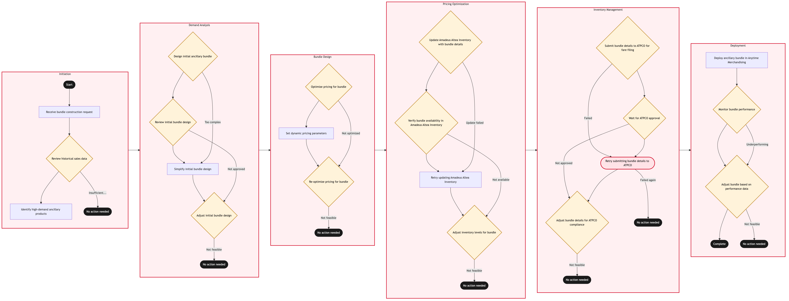

Updated 2026-08-20
Ancillary Bundle Construction in Anytime Merchandising
Process flow
Click to zoom

Process steps
▼
Phase 1 — Initiation
3 steps
| Step | Activity | Role | System | Input | Output | KPI | Dec | Exc | Pain point |
|---|---|---|---|---|---|---|---|---|---|
| 1.1 | Receive bundle construction request | Revenue Manager | PROS Revenue ManagementB | Internal request details | Bundle construction task | Time to initiate bundle | N | N | Delayed internal approvals can stall the process. |
| 1.2 | Review historical sales data | Revenue Analyst | PROS Revenue ManagementB | Historical sales records | Demand analysis report | Accuracy of demand prediction | Y | N | Inaccurate data can lead to poor bundle design. |
| 1.3 | Identify high-demand ancillary products | Revenue Analyst | PROS Revenue ManagementB | Demand analysis report | Product list for bundle | Number of relevant products identified | N | N | Lack of data on product performance can hinder selection. |
▼
Phase 2 — Demand Analysis
4 steps
| Step | Activity | Role | System | Input | Output | KPI | Dec | Exc | Pain point |
|---|---|---|---|---|---|---|---|---|---|
| 2.1 | Design initial ancillary bundle | Revenue Manager | PROS Revenue ManagementB | Product list | Initial bundle design | Bundle complexity | Y | N | Overly complex bundles can confuse customers. |
| 2.2 | Review initial bundle design | Revenue Analyst | PROS Revenue ManagementB | Initial bundle design | Design feedback | Feedback time | Y | N | Poor communication can delay design iterations. |
| 2.3 | Simplify initial bundle design | Revenue Manager | PROS Revenue ManagementB | Design feedback | Simplified bundle design | Time to simplify | N | N | Too many iterations can extend the process. |
| 2.4 | Adjust initial bundle design | Revenue Manager | PROS Revenue ManagementB | Design feedback | Adjusted bundle design | Time to adjust | Y | N | Inflexible adjustments can lead to missed opportunities. |
▼
Phase 3 — Bundle Design
3 steps
| Step | Activity | Role | System | Input | Output | KPI | Dec | Exc | Pain point |
|---|---|---|---|---|---|---|---|---|---|
| 3.1 | Optimize pricing for bundle | Pricing Analyst | PROS Real-Time Dynamic PricingA | Simplified or adjusted bundle design | Price optimization report | Time to optimize price | Y | N | Complex pricing rules can slow down the process. |
| 3.2 | Set dynamic pricing parameters | Pricing Analyst | PROS Real-Time Dynamic PricingA | Price optimization report | Dynamic pricing settings | Number of parameters set | N | N | Incorrect parameter settings can lead to suboptimal pricing. |
| 3.3 | Re-optimize pricing for bundle | Pricing Analyst | PROS Real-Time Dynamic PricingA | Price optimization report | Revised price optimization report | Time to re-optimize | Y | N | Multiple optimizations can increase process duration. |
▼
Phase 4 — Pricing Optimization
4 steps
| Step | Activity | Role | System | Input | Output | KPI | Dec | Exc | Pain point |
|---|---|---|---|---|---|---|---|---|---|
| 4.1 | Update Amadeus Altea Inventory with bundle details | Inventory Manager | Amadeus Altea InventoryA | Final bundle design and pricing settings | Updated inventory records | Time to update inventory | Y | N | Inventory updates can be delayed due to system constraints. |
| 4.2 | Verify bundle availability in Amadeus Altea Inventory | Inventory Manager | Amadeus Altea InventoryA | Updated inventory records | Availability verification report | Time to verify availability | Y | N | Manual verification can be error-prone. |
| 4.3 | Retry updating Amadeus Altea Inventory | Inventory Manager | Amadeus Altea InventoryA | Final bundle design and pricing settings | Updated inventory records | Time to retry update | N | N | System failures can impact availability. |
| 4.4 | Adjust inventory levels for bundle | Inventory Manager | Amadeus Altea InventoryA | Availability verification report | Adjusted inventory levels | Time to adjust inventory | Y | N | Inflexible adjustments can lead to stockouts. |
▼
Phase 5 — Inventory Management
4 steps
| Step | Activity | Role | System | Input | Output | KPI | Dec | Exc | Pain point |
|---|---|---|---|---|---|---|---|---|---|
| 5.1 | Submit bundle details to ATPCO for fare filing | Fare Filing Specialist | ATPCOB | Final bundle design and pricing settings | Fare filing submission | Time to submit fare filing | Y | Y | ATPCO's rate-limiting step can delay the process. |
| 5.2 | Wait for ATPCO approval | Fare Filing Specialist | ATPCOB | Fare filing submission | Approval status | Time to receive approval | Y | N | Delays in ATPCO processing can impact sales. |
| 5.3 | Retry submitting bundle details to ATPCO | Fare Filing Specialist | ATPCOB | Final bundle design and pricing settings | Fare filing submission | Time to retry submission | N | Y | Multiple re-submissions can increase latency. |
| 5.4 | Adjust bundle details for ATPCO compliance | Fare Filing Specialist | ATPCOB | Approval status | Adjusted bundle details | Time to adjust | Y | N | Non-compliance can lead to further delays. |
▼
Phase 6 — Deployment
3 steps
| Step | Activity | Role | System | Input | Output | KPI | Dec | Exc | Pain point |
|---|---|---|---|---|---|---|---|---|---|
| 6.1 | Deploy ancillary bundle in Anytime Merchandising | Merchandising Specialist | Anytime MerchandisingU | Adjusted bundle details | Active ancillary bundle | Time to deploy | N | N | Deployment issues can disrupt customer experience. |
| 6.2 | Monitor bundle performance | Merchandising Specialist | Anytime MerchandisingU | Active ancillary bundle | Performance metrics | Time to monitor | Y | N | Inadequate monitoring can lead to missed opportunities. |
| 6.3 | Adjust bundle based on performance data | Merchandising Specialist | Anytime MerchandisingU | Performance metrics | Adjusted bundle settings | Time to adjust | Y | N | Inflexible adjustments can lead to further underperformance. |
Swim lanes
Revenue Manager1.1 2.1 2.3 2.4
Revenue Analyst1.2 1.3 2.2
Pricing Analyst3.1 3.2 3.3
Inventory Manager4.1 4.2 4.3 4.4
Fare Filing Specialist5.1 5.2 5.3 5.4
Merchandising Specialist6.1 6.2 6.3
Systems touched
PROS Revenue ManagementBPROS Real-Time Dynamic PricingAAmadeus Altea InventoryAATPCOBAnytime MerchandisingU
Key performance indicators
- 10 minutes to initiate bundle
- 95% accurate demand prediction
- 3 products identified per bundle design
- 20 minutes to optimize price
- 10 minutes to update inventory
Risks and control points
- Delays in internal approvals can stall the process.
- Inaccurate data can lead to poor bundle design.
- Overly complex bundles can confuse customers.
- Complex pricing rules can slow down the process.
- System failures can impact availability.
Air Canada Process Wiki — process and systems reference compiled from public sources
for IT Application Management and User Support pre-sales discovery.
Built 2026-08-20. Every system carries an evidence tier: tier C is an industry pattern and tier U is an open
question, and neither should be asserted as fact about Air Canada without confirmation in discovery.
Not affiliated with or endorsed by Air Canada. Air Canada, Aeroplan and Altitude are trademarks of Air Canada.